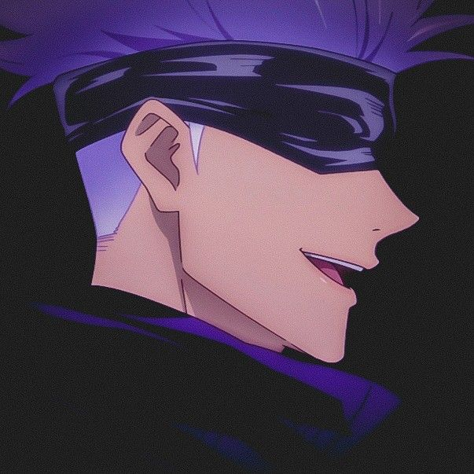

Denner G. de Melo
Desenvolvedor
São Leopoldo, RS, Brasil
Uma descrição para deixar alguém mais informado de quem eu sou, acho que assim deixa a coisa mais interessante, sei lá.
Desenvolvedor
São Leopoldo, RS, Brasil
Uma descrição para deixar alguém mais informado de quem eu sou, acho que assim deixa a coisa mais interessante, sei lá.
Veja meus repositórios open-source no Github.
Um simples plugin de pescaria, feito para o Minecraft 1.8.
Um plugin de extrator de encantamentos para o Minecraft.
Um simples plugin de pescaria, feito para o Minecraft 1.8.
Um simples plugin de pescaria, feito para o Minecraft 1.8.